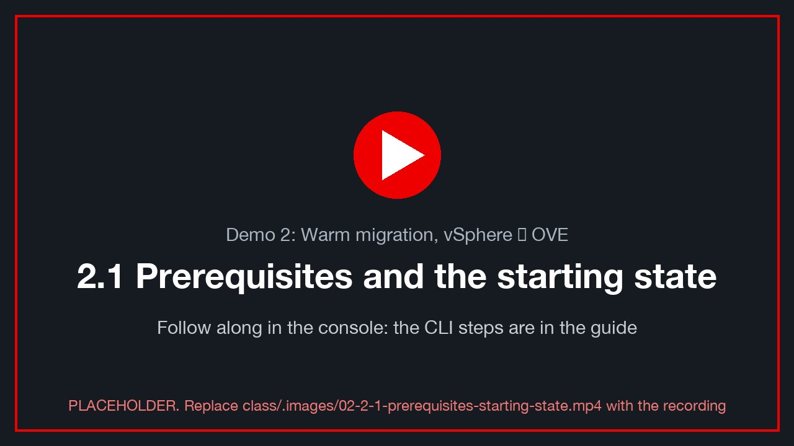
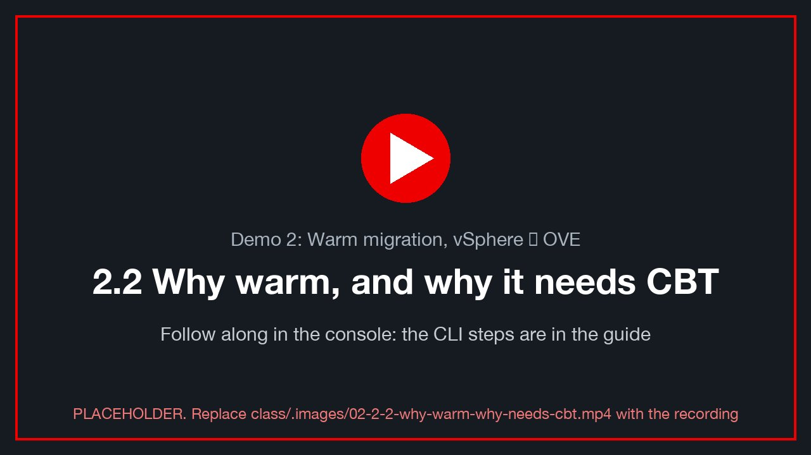
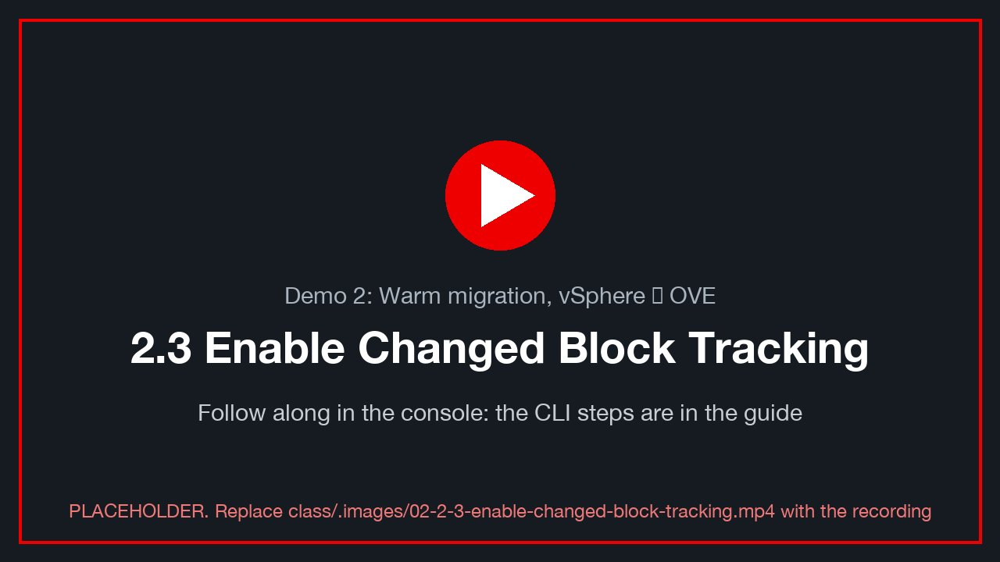
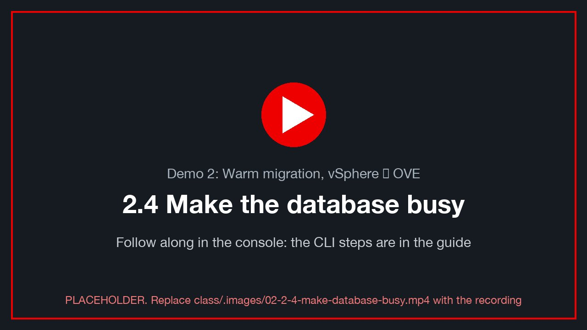
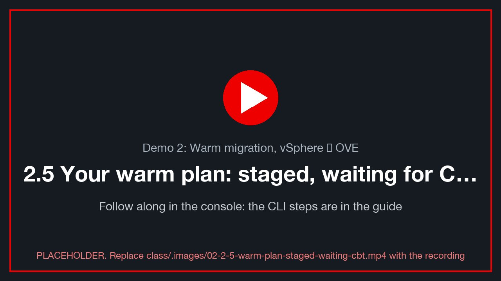
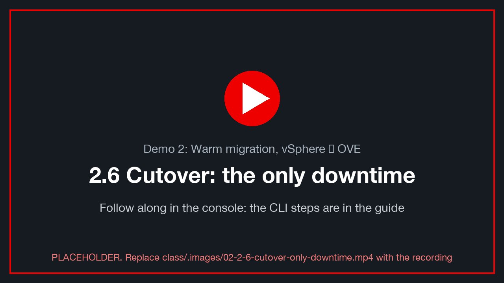
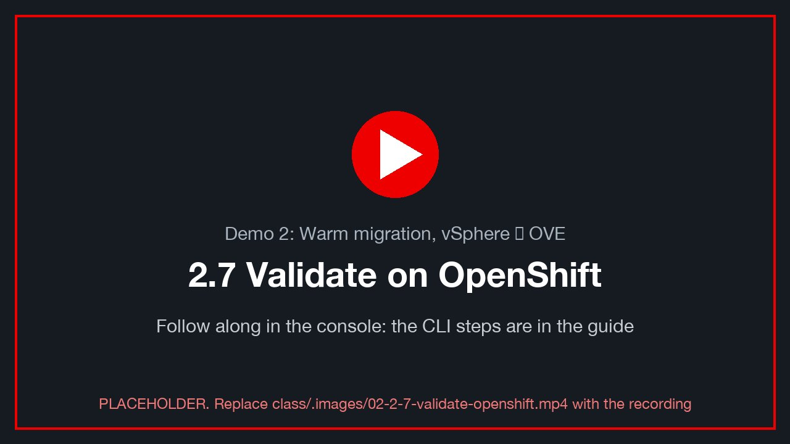
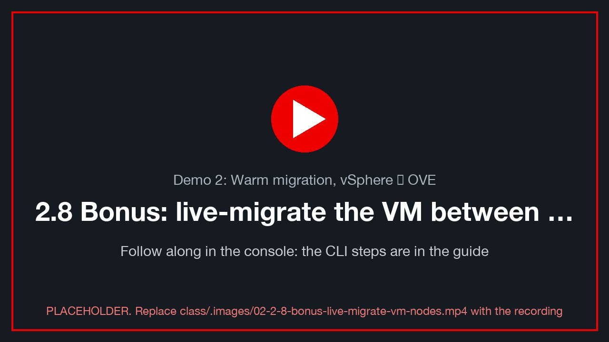
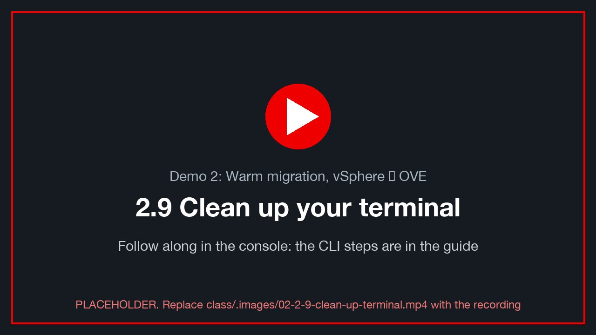

Demo 2: Warm migration, vSphere → OVE¶
Version 0.5.0 · draft · 2026-10-12 · class/demos/02-vmware-to-ove-warm.md
What you will learn¶
In this demo you migrate a running VMware VM to OpenShift Virtualization while it keeps serving its database. The only outage is a short cutover. You will turn on vSphere Changed Block Tracking (CBT) for the VM and for each of its disks, and see why MTV needs it to copy only what changed between rounds. You will load the database while the disks pre-copy, cut over, and measure the real downtime from the VM's own heartbeat. Finally, you will prove with your hash-chained rows that every write, including those made during the copy, arrived intact and in order.
How the lab is set up for this demo¶
The class CI customization (the customize run that core-web starts after the three environments are built)
prepares everything below before you log in. See the lab diagram for how the three environments
connect, and Lab S — how this lab was built for the CLI and console steps behind each row.
| Pre-built for you | Where | How it was built · Red Hat docs |
|---|---|---|
OpenShift Virtualization (ove: cnv) |
both clusters (the same operators on both) | S.2 · OpenShift Virtualization 4.19 |
| ACM and cert-manager | both clusters (base demo-openshift build) |
S.10 · ACM 2.13 |
NMState bridges + VLAN NADs (vmnet<VLAN>) |
both clusters | S.3 · Kubernetes NMState [verify link] |
| Storage | site A ODF (ocs-storagecluster-ceph-rbd-virtualization), site B NFS (nfs-csi): one ODF site today, the lab's SSDs fit one |
S.4 · ODF 4.19 |
| MTV (Migration Toolkit for Virtualization) | both tooled sites, with its console menu | provider ovedr-vcenter0<N> with network maps (pod + bridge) and storage map, Ready. S.5 · S.6 · S.8 · MTV 2.11 |
| VDDK image on that provider | site A | prerequisite for warm migration (repo variable MTV_VDDK_IMAGE). Without it, MTV can only migrate cold. The demo-prep readiness table says whether this booking has it. S.6 · Creating a VDDK image [verify link] |
| Pre-copy interval shortened to 5 min | both tooled sites | the MTV default is 60 min between rounds, too slow for a class. S.10 |
Staged cold plans d1-<VM> / d1b-<VM>-to-<B> |
both sites | for Demos 1 and 1b. Demo 2's warm plan is the one you build here. S.12 |
Your namespace $VMNS (your class ID, you are admin) with your Service/<VM>-sql and your browser terminal sql-client |
both clusters | your VM lands in your namespace. S.9 |
| Student rights | both clusters | read MTV objects, bridges, storage classes; create and run your own plans and migrations. S.9 |
Your own VM, win-pg-s<NN> |
vSphere vcenter0<N>, in your folder vms/students/<class ID> |
a full clone of win-pg-i01 at its own address .100+NN: Windows Server 2022 + PostgreSQL 16 (WAL on L:, data on D:), heartbeat writer, the marks toolkit, your Windows login. You can power it, open its console and Edit Settings yourself. S.11 |
State at the start of this demo: your VM is powered on and writing on vSphere, at its own address
$VM_IP. If you ran Demo 1 first, MTV left the vSphere original powered off. Power it back on in vCenter
(Actions → Power → Power On; your ovedr-student-vm role allows it on your own VM).
⚠️ One copy on the VLAN at a time. The warm plan uses the bridge map, so the migrated VM keeps
$VM_IP. If your Demo 1 copy is still running on OpenShift, stop it first (it holds the same address):oc --context site-a -n "$VMNS" patch vm "$VM" --type merge -p '{"spec":{"runStrategy":"Halted"}}'.
What you do yourself: enable CBT, build and start the warm plan, cut over, and verify. Your VM keeps its own address on OpenShift, so Lab 0 §0.6 is not needed.
Before you start: do Lab 0 in this terminal. You need
site-a/site-bcontexts, the variables (ME,N,A,B,VM,VM_IP,WINUSER) and the helpers (sql,mark,load,verify,alive,where).🖥️ Where you type the commands: your browser terminal. Every
bashblock in this guide runs in your own terminal pod, in the browser: in the site A console, project<your class ID>→ Workloads → Pods →sql-client→ Terminal (Lab 0 §0.3). Nothing is installed on your computer. It already knows your VM and its address (typeovedr);dbloginandocloginfrom Lab 0 stay signed in while the pod runs. Variables youexportlast until you close that Terminal tab: if you reopen it, re-run the guide'sexportlines. Paste with right-click → Paste (or Ctrl+Shift+V / ⌘V).powershellblocks run inside your Windows VM, from its console (vCenter Launch Web Console, or the VM's Console tab in OpenShift).
2.1 Prerequisites and the starting state¶
class/.images/02-2-1-prerequisites-starting-state.mp4).
The name your VM gets on OpenShift¶
Your staged warm plan d2-<VM> lands your VM on site A, in your namespace, as <VM>-warm. That way it never
collides with your Demo 1 copy (<VM>), whether or not that copy still exists.
export TARGET="$VM-warm" PLAN="d2-$VM"
echo "vSphere VM=$VM → OpenShift name=$TARGET (namespace $VMNS) plan=$PLAN"
💡 Your chain continues on the vSphere copy. If you ran Demo 1, its OpenShift copy and the vSphere original split at Demo 1's cutover. Rows you wrote on OpenShift in Demo 1 are not on the vSphere original, and that's expected. Your chain on the original carries on from your last pre-migration row.
Check: the provider can do warm¶
oc --context site-a -n openshift-mtv get provider ovedr-vcenter0$N \
-o jsonpath='{.status.phase}{" vddk="}{.spec.settings.vddkInitImage}{"\n"}' # Ready, and a vddk image [verify]
oc --context site-a -n openshift-mtv get forkliftcontroller forklift-controller \
-o jsonpath='{"precopy interval (min): "}{.spec.controller_precopy_interval}{"\n"}' # 5 [verify]
⚠️ No VDDK image, no warm migration. If
vddk=is empty, tell the instructor and stop here. The warm plan will either refuse to start, or fall back to behaviour this guide doesn't describe.
🧑🏫 Instructor only: if CI did not set them¶
oc --context site-a -n openshift-mtv patch forkliftcontroller forklift-controller --type merge \
-p '{"spec":{"controller_precopy_interval":5}}' # minutes between pre-copies [verify]
Check: your VM is up and writing on vSphere¶
Your VM still runs on vSphere, and your browser terminal reaches it at its own address, $VM_IP:
export PGHOST=$VM_IP # your VM's own address (the terminal's default)
alive # staleness < 10 s
mark d2-start # ✍️ note the id
verify # chain_ok = t
📸 02-start-alive — alive and verify output, with the VM on vSphere.
2.2 Why warm, and why it needs CBT¶
class/.images/02-2-2-why-warm-why-needs-cbt.mp4).
A cold migration (Demo 1) powers the VM off, copies every block of every disk, then boots it on OpenShift. The outage is the whole copy.
A warm migration works in rounds:
| Phase | VM state | What MTV does |
|---|---|---|
| Pre-copy 1 | running | snapshots each disk on vSphere and copies the whole disk to a PVC |
| Pre-copy 2…n | running | every interval, takes a new snapshot and copies only the blocks changed since the previous one |
| Cutover | stopped | one last snapshot, copies the last small delta, converts drivers, boots on OpenShift |
The question "which blocks changed since the last snapshot?" is answered by vSphere Changed Block Tracking. Without CBT, every round would be a full copy. That's why MTV refuses a warm plan for a VM whose disks don't have CBT enabled.
2.3 Enable Changed Block Tracking¶
class/.images/02-2-3-enable-changed-block-tracking.mp4).
CBT is a per-VM switch (ctkEnabled) plus a per-disk switch for each virtual disk (scsi0:N.ctkEnabled).
It takes effect at the next power-on, so turn it on while the VM is off.
Leave a mark, then shut your VM down cleanly¶
mark d2-before-cbt
In your VM's web console (vCenter → <VM> → Launch Web Console, log in as .\<WINUSER>), in PowerShell:
Add-Content "C:\Users\Public\ovedr\$env:USERNAME.txt" "$(Get-Date -Format o) d2-before-cbt"
Stop-Computer -Force # a clean guest shutdown of YOUR VM [verify: Users may shut down this server]
Or, from vCenter: Actions → Power → Shut Down Guest OS.
Find the exact disk keys first¶
The VM's three disks sit on one LSI Logic SAS controller, so their keys are scsi0:<unit>. Read the units
rather than guessing.
vCenter UI: VM → Edit Settings → Virtual Hardware. Expand each Hard disk and note its
Virtual Device Node, for example SCSI controller 0 : SCSI(0:0).
| Disk | Size | Holds | Device node (fill in) |
|---|---|---|---|
| Hard disk 1 | 60 GB | C: Windows |
scsi0:__ |
| Hard disk 2 | 5 GB | L: PostgreSQL WAL |
scsi0:__ |
| Hard disk 3 | 10 GB | D: PostgreSQL data |
scsi0:__ |
📸 02-disk-device-nodes — Edit Settings, with the three hard disks' Virtual Device Node expanded.
🧑🏫 Instructor alternative (govc):
govc device.info -vm "$VM" 'disk-*' | grep -E 'Name:|Label:|Unit number|Controller|Summary'
Set the parameters (VM powered off)¶
⚠️ Your VM must be shut down. vCenter only accepts these parameters on a powered-off VM, and CBT takes effect at the next power-on. With CBT on, MTV can copy only the blocks that changed since the last pre-copy, which is what makes the warm ("hot") migration in this demo possible.
vCenter UI: your VM → Edit Settings → Advanced Parameters (vSphere 8; older UIs: VM Options → Advanced → Edit Configuration). For each row below, type the Attribute and Value, then click ADD:
| Attribute | Value |
|---|---|
ctkEnabled |
true |
scsi0:0.ctkEnabled |
true |
scsi0:1.ctkEnabled |
true |
scsi0:2.ctkEnabled |
true |
(Use the device nodes you found above if they differ from 0, 1 and 2.)
 Adding a row: Attribute
Adding a row: Attribute ctkEnabled, Value true, then ADD. The list's filter (funnel icon) set to ctk shows only
the CBT rows.
When all four are added, the list (filtered on ctk) shows them. Click OK:
 All four rows set:
All four rows set: ctkEnabled for the VM, plus scsi0:0, scsi0:1 and scsi0:2 for its three disks.
🧑🏫 Instructor alternative (govc):
govc vm.info "$VM" | grep 'Power state' # poweredOff
govc vm.change -vm "$VM" \
-e ctkEnabled=TRUE \
-e scsi0:0.ctkEnabled=TRUE -e scsi0:1.ctkEnabled=TRUE -e scsi0:2.ctkEnabled=TRUE
govc vm.info -e "$VM" | grep -i ctkEnabled # four rows, TRUE
Power your VM back on¶
vCenter: Actions → Power → Power On.
Check: CBT is active¶
When a VM powers on with CBT enabled, vSphere creates a change-tracking file (*-ctk.vmdk) next to each disk.
- vCenter UI: Storage →
coresan01_data00→ Files →ovedr-lz<N>-<VM>/(each class VM's folder carries its zone, because every zone shares this datastore). There should be one…-ctk.vmdkper disk, three in all. - 🧑🏫 govc:
govc datastore.ls -ds coresan01_data00 "ovedr-lz$N-$VM/" | grep -- '-ctk.vmdk' # 3 files
📸 02-ctk-files — the datastore browser listing three -ctk.vmdk files.
Wait for the database to come back, then prove nothing was lost across the shutdown:
until alive 2>/dev/null | grep -q 'beats'; do sleep 10; done
alive # postgres_started is new: the VM rebooted
mark d2-cbt-on
verify # chain_ok = t — the reboot lost nothing
✍️ Row 2.1: CBT on (yes/no), the number of -ctk.vmdk files, and your d2-cbt-on id.
2.4 Make the database busy¶
class/.images/02-2-4-make-database-busy.mp4).
Warm migration matters when the VM is changing while it copies. Give it something to copy.
In the guest¶
Add-Content "C:\Users\Public\ovedr\$env:USERNAME.txt" "$(Get-Date -Format o) d2-precopy-started"
From your terminal¶
A burst now, then a small burst every minute in the background, so each pre-copy round has new blocks to ship:
load d2-precopy 500 # 500 hash-chained rows, right now
( for i in $(seq 1 30); do load "d2-precopy-$i" 50 >/dev/null 2>&1; sleep 60; done ) &
export LOADER=$! # stop it before cutover (2.6)
verify
✍️ Row 2.2: your marks count after the 500-row burst.
2.5 Your warm plan: staged, waiting for CBT¶
class/.images/02-2-5-warm-plan-staged-waiting-cbt.mp4).
The lab staged a warm plan for every class VM on both sites: d2-<VM> on site A (and d2b-<VM>-to-<B> on site B, the same
plan to the other cluster) (type Warm, target name <VM>-warm, target
namespace yours, the class's bridge network map and storage map), not started. How it was built: Lab S
§S.12. Red Hat: Warm migration [verify link].
Before 2.3: the plan flags CBT (expected)¶
Open Migration for Virtualization → Migration plans → d2-<VM> → Virtual machines and expand your VM. Until you
enable Changed Block Tracking, MTV flags it, and the plan can't start: this is the point of 2.3. Once your VM
has CBT on all four keys and has been powered on again, the concern clears and the plan shows Ready.
📸 02-plan-warm-cbt-concern: your d2-<VM> plan, the VM row expanded, with the CBT concern (before 2.3).
oc --context site-a -n openshift-mtv get plan "$PLAN" \
-o jsonpath='{range .status.conditions[*]}{.type}={.status} {.category} {.message}{"\n"}{end}'
Expected conditions before 2.3: VMMissingChangedBlockTracking (yours to fix in 2.3). If you also see
VDDKInitImageUnavailable, the lab has no VDDK image yet: that one is the instructor's, not yours (BL-B27). Stop and tell them.
✅ After 2.3: Ready=True, and no CBT concern. If the plan still says CBT isn't enabled on a disk, go back to 2.3: a disk
is missing its scsi0:N.ctkEnabled, or the VM hasn't been power-cycled since you set it.
Build it yourself (learning path, optional)¶
To see every field, build your own warm plan with a different name, e.g. <your class ID>-warm-migration-plan. Start
either the staged d2-<VM> or yours, never both. Console, site A → Migration for Virtualization →
Migration plans → Create plan, as in Demo 1 (same General step, same class maps), with Migration type: Warm:
| Field | Value |
|---|---|
| Plan name | <your class ID>-warm-migration-plan |
| Source provider / Target provider / Target project | ovedr-vcenter0<N> / host / your namespace ($VMNS) |
| VM | your <VM> |
| Network map | ovedr-vcenter0<N>-net-bridge (use the existing map; keeps $VM_IP) |
| Storage map | ovedr-vcenter0<N>-storage (use the existing map) |
| Migration type | Warm |
Or as YAML:
oc --context site-a apply -f - <<EOF
apiVersion: forklift.konveyor.io/v1beta1
kind: Plan
metadata: { name: $VMNS-warm-migration-plan, namespace: openshift-mtv }
spec:
warm: true
targetNamespace: $VMNS
provider:
source: { name: ovedr-vcenter0$N, namespace: openshift-mtv }
destination: { name: host, namespace: openshift-mtv }
map:
network: { name: ovedr-vcenter0$N-net-bridge, namespace: openshift-mtv }
storage: { name: ovedr-vcenter0$N-storage, namespace: openshift-mtv }
vms:
- name: $VM
targetName: $TARGET-mine # [verify: Plan.spec.vms[].targetName in MTV 2.11]
EOF
Start it¶
Your task, the last step, once CBT is on and the plan is Ready: console Migration plans → d2-<VM> → Start. Or:
oc --context site-a apply -f - <<EOF
apiVersion: forklift.konveyor.io/v1beta1
kind: Migration
metadata: { name: $PLAN, namespace: openshift-mtv }
spec: { plan: { name: $PLAN, namespace: openshift-mtv } }
EOF
Check: watch the pre-copies¶
precopies() { oc --context site-a -n openshift-mtv get migration "$PLAN" -o json \
| jq -r '.status.vms[0] | "phase=\(.phase) precopies=\(.warm.precopies | length) ok=\(.warm.successes // 0) failures=\(.warm.failures // 0) next=\(.warm.nextPrecopyAt // "-")",
(.warm.precopies[]? | " #\(.snapshot // "-") start=\(.start) end=\(.end // "running")")'; }
precopies
watch -n 30 "oc --context site-a -n openshift-mtv get migration $PLAN -o jsonpath='{.status.vms[0].phase}{\" precopies=\"}{.status.vms[0].warm.successes}{\"\n\"}'"
While pre-copies run:
alive # STILL writing: the VM is up during pre-copy
mark d2-during-precopy
oc --context site-a -n "$VMNS" get pvc | grep "$TARGET" # three PVCs filling for your VM
In vCenter, open your VM → Snapshots. MTV creates a snapshot for each round and removes the previous one.
📸 02-precopy-snapshots — the VM's snapshot manager during a pre-copy round.
📸 02-precopy-status — the plan page showing completed pre-copies.
💡 Watch the round sizes. The first pre-copy carries the whole disks. Every round after it carries only the blocks your
loadloop and the heartbeat changed. That shrink is CBT at work.
✍️ Row 2.3: the number of successful pre-copies before cutover, and how long the first one took versus a later one.
2.6 Cutover: the only downtime¶
class/.images/02-2-6-cutover-only-downtime.mp4).
Let at least two pre-copies complete, then stop the background load and leave a last mark on vSphere:
kill "$LOADER" 2>/dev/null; wait "$LOADER" 2>/dev/null
mark d2-before-cutover # ✍️ note this id: it must survive the cutover
export CUTOVER_AT=$(date -u +%Y-%m-%dT%H:%M:%SZ); echo "cutover requested at $CUTOVER_AT"
In the guest:
Add-Content "C:\Users\Public\ovedr\$env:USERNAME.txt" "$(Get-Date -Format o) d2-before-cutover"
Cut over now¶
Console: Plans → d2-<VM> → Cutover → now. Or set the Migration's cutover time:
oc --context site-a -n openshift-mtv patch migration "$PLAN" --type merge \
-p "{\"spec\":{\"cutover\":\"$CUTOVER_AT\"}}"
MTV then shuts your source VM down, takes one last snapshot, copies the final delta, converts the drivers for
KVM, and starts <TARGET> on site A.
precopies # phase moves past the copy
oc --context site-a -n openshift-mtv get migration "$PLAN" -w # Ctrl-C at Succeeded
📸 02-cutover-done — the plan showing Succeeded, with the cutover timestamps.
2.7 Validate on OpenShift¶
class/.images/02-2-7-validate-openshift.mp4).
Your VM keeps its address¶
The warm plan used the bridge map, so <TARGET> answers at your own $VM_IP, and the helpers keep working.
(Only if you chose the pod map: follow Lab 0 §0.6
with CTX=site-a and VM=$TARGET.)
VM=$TARGET where # site-a Running, and the node it landed on
oc --context site-a -n "$VMNS" get vm,vmi "$TARGET"
pg_isready -h "${PGHOST:-$VM_IP}" -p 5432
Check: every row arrived, in order, unaltered¶
until alive 2>/dev/null | grep -q beats; do sleep 10; done # Windows boot + PostgreSQL start
alive # writing again, postgres_started = after cutover
verify # chain_ok = t; last_stage = d2-before-cutover (or later)
mark d2-after-cutover
verify
✅ chain_ok = t. Every row from d2-start, the 500-row burst, every background round and d2-before-cutover
is present and in order.
✅ last_stage before your new mark was d2-before-cutover or a background round written after it. The last
pre-copy didn't lose the tail, because the cutover copied it.
Check: the real downtime¶
The heartbeat writer runs every 5 s, so the outage is the gap in it around the cutover:
sql -c "
SELECT ts AS resumed_at, date_trunc('second', gap) AS outage
FROM (SELECT ts, ts - lag(ts) OVER (ORDER BY id) AS gap FROM heartbeat) g
WHERE gap > interval '10 seconds' AND ts > timestamptz '$CUTOVER_AT' - interval '5 minutes'
ORDER BY ts;"
The first gap after $CUTOVER_AT is the cutover. Compare the cutover gap with Demo 1's cold outage (your proof table, row 1.x), which was the whole copy.
📸 02-outage-sql — the gap query result next to Demo 1's.
Check: your file came across too¶
Console, site A → Virtualization → VirtualMachines → <TARGET> → Console. Log in as .\<WINUSER>:
Get-Content "C:\Users\Public\ovedr\$env:USERNAME.txt" # lab0 … d2-before-cutover, all there
Add-Content "C:\Users\Public\ovedr\$env:USERNAME.txt" "$(Get-Date -Format o) d2-on-ove"
Get-Service | Where-Object Name -match 'qemu-ga|vmtools' | Format-Table Name, Status # guest agent vs VMware Tools [verify]
📸 02-ove-console-file — the OVE VNC console showing your file's lines.
✍️ Row 2.4: cutover downtime (heartbeat gap) versus Demo 1's outage, chain_ok, and the fingerprint.
Thank you¶
Thank you for working through Demo 2. You moved a live, busy database VM off VMware with an outage measured in minutes, and proved with your own hash-chained rows that nothing written during the copy was lost. The bonus round below shows what OpenShift Virtualization does once the VM is on it: moves between nodes with no outage.
To go further:
- Lab S — how this lab was built: the provider, VDDK, maps and plans, from the CLI and in the console
- Migration Toolkit for Virtualization 2.11 documentation: warm migration, VDDK, and the precopy settings
- MTV: planning your migration (warm migration, CBT prerequisites) [verify link]
- OpenShift Virtualization: live migration [verify link]
- OpenShift Virtualization (OpenShift 4.19) documentation: live migration, storage, networking
- Red Hat OpenShift Virtualization product page
- DO316: Managing Virtual Machines with Red Hat OpenShift Virtualization: Red Hat Training
- Red Hat interactive labs: try OpenShift Virtualization in your browser
- Red Hat Developer: OpenShift
2.8 Bonus: live-migrate the VM between nodes¶
class/.images/02-2-8-bonus-live-migrate-vm-nodes.mp4).
The VM is on OpenShift now, so moving it to another node in the same cluster doesn't stop it at all. KubeVirt copies its memory while it runs. (This is in-cluster live migration, not MTV.)
Is it live-migratable?¶
oc --context site-a -n "$VMNS" get vmi "$TARGET" \
-o jsonpath='{range .status.conditions[*]}{.type}={.status} {.message}{"\n"}{end}' | grep -i migrat
✅ LiveMigratable=True. That needs ReadWriteMany disks: true on the NFS class, and on ODF's virtualization class
with RWX block. If it says False, read the message (usually the access mode) and tell the instructor [verify].
Inject, migrate, verify¶
mark d2-before-livemig
oc --context site-a -n "$VMNS" get vmi "$TARGET" -o jsonpath='{.status.nodeName}{"\n"}' # ✍️ node before
export LM_AT=$(date -u +%Y-%m-%dT%H:%M:%SZ)
Console: VirtualMachines → <TARGET> → Actions → Migrate (Compute). Or virtctl:
virtctl --context site-a -n "$VMNS" migrate "$TARGET"
Or as a resource, which is what virtctl creates:
oc --context site-a create -f - <<EOF
apiVersion: kubevirt.io/v1
kind: VirtualMachineInstanceMigration
metadata: { generateName: $TARGET-move-, namespace: $VMNS }
spec: { vmiName: $TARGET }
EOF
Watch it, then prove the data. A live migration keeps the VM's address: on the bridge it stays $VM_IP.
oc --context site-a -n "$VMNS" get vmim -w # Ctrl-C at Succeeded
oc --context site-a -n "$VMNS" get vmi "$TARGET" -o jsonpath='{.status.nodeName}{" "}{.status.migrationState.endTimestamp}{"\n"}'
mark d2-after-livemig
verify # chain_ok = t
sql -c "
SELECT max(gap) AS worst_gap FROM (SELECT ts - lag(ts) OVER (ORDER BY id) AS gap
FROM heartbeat WHERE ts > timestamptz '$LM_AT' - interval '1 minute') g;" # ≈ 5 s: no outage
✅ A different node, chain_ok = t, and the worst heartbeat gap is about the 5 s write interval, so there was no outage.
PostgreSQL's postgres_started (from alive) is unchanged, because the database never restarted.
📸 02-livemig-node — the VM's overview page before and after, showing two different nodes.
✍️ Row 2.5: node before → after, the worst heartbeat gap, and chain_ok.
2.9 Clean up your terminal¶
class/.images/02-2-9-clean-up-terminal.mp4).
kill "$LOADER" 2>/dev/null; unset LOADER LM_AT
# keep TARGET and PGHOST if your next demo continues with this VM
Proof table: Demo 2¶
| Row | Stage | Your last mark id | chain_ok |
Fingerprint | Notes |
|---|---|---|---|---|---|
| 2.1 | d2-cbt-on |
CBT on? number of -ctk.vmdk files: |
|||
| 2.2 | d2-precopy burst |
marks count after 500 rows: | |||
| 2.3 | pre-copies | — | — | — | successful pre-copies: ___ · first took ___ · a later one took ___ |
| 2.4 | d2-after-cutover |
cutover downtime ___ s vs Demo 1 cold outage ___ s · your VM's pod IP: ___ | |||
| 2.5 | d2-after-livemig (bonus) |
node ___ → ___ · worst heartbeat gap ___ s |
The claim this table proves: with CBT, the VM ran and wrote through every pre-copy round, and the only outage was the cutover. The hash chain proves that nothing written before the cutover, including during the copy, was lost, altered or reordered.